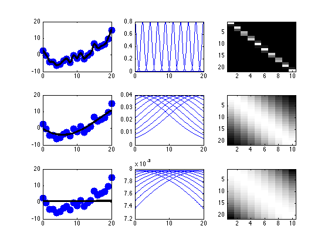

Demo of RBF Expansion for linear regression
[xtrain, ytrain, xtest, ytest] = polyDataMake('sampling','thibaux');
lambda = 0.001;
sigmas = [0.5 10 50];
K = 10;
centers = linspace(min(xtrain), max(xtrain), K)';
figure; hold on
for i=1:length(sigmas)
sigma = sigmas(i);
preproc.kernelFn = @(X1, X2)kernelRbfSigma(X1, X2, sigma);
preproc.addOnes = true;
model = linregFit(xtrain, ytrain, 'preproc', preproc, 'lambda', lambda);
ypred = linregPredict(model, xtest);
subplot2(3,3,i,1)
plot(xtrain,ytrain,'.b','markerSize', 40);
hold on
plot(xtest, ypred, 'k', 'linewidth', 3);
subplot2(3,3,i,2)
Xtest = kernelRbfSigma(xtest(:), centers, sigma);
for j=1:K
plot(xtest, Xtest(:,j)); hold on
end
XtrainRBF = kernelRbfSigma(xtrain(:), centers, sigma);
subplot2(3,3,i,3)
imagesc(XtrainRBF); colormap('gray')
end
printPmtkFigure rbfDemoALL
